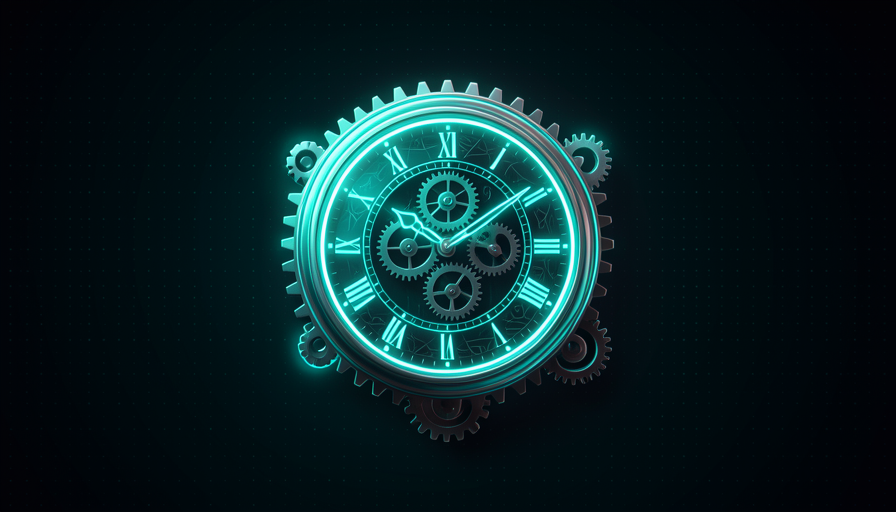

📖 Glosario vivo (lee antes — vuelve siempre que lo necesites)
Este módulo está lleno de términos de automatización. Definimos los nuevos en lenguaje sencillo aquí — los fundamentos (modelo, agente, harness, skill) ya aparecieron en la Ruta 1:
.github/workflows/.tsc en TypeScript) que detecta errores de tipo antes de ejecutar. Es el «pasó el control de calidad» barato.0 9 * * *).🦴 Esqueleto de la Action
🧠 Imagínalo así: una fábrica con una cinta transportadora. Cada vez que llega una pieza nueva (un PR), la cinta se pone en marcha sola: toma la pieza, pasa por el control de calidad, llama al inspector (el agente) y le pega una etiqueta con su evaluación. No tienes que poner la cinta en marcha a mano: responde al activador. Una GitHub Action es esa cinta, pero para código.
Pocock describe una "agent review action": una GitHub Action que "se ejecuta en un PR, hace checkout, verifica los tipos, ejecuta el agente de revisión (un prompt local) y responde 'looks good'." El secreto de toda Action está en su estructura: tiene un disparador (o on: — lo que conecta con la cadena), uno o más jobs (lo que se ejecuta), y dentro de cada job una secuencia de steps (los pasos). Este esquema siempre es el mismo — solo cambia lo que va dentro.
¿Por qué esto lo desbloquea tanto? Porque «run agents on GitHub Actions» es unreasonably effective" — puedes paralelizar todo lo que quieras sin preocuparte por los recursos de la máquina local. La cadena se ejecuta en la nube de GitHub: tu laptop puede estar apagada. El prompt local (un archivo de instrucciones de revisión que vive en el propio repo) es el cerebro del inspector: versionado junto con el código, igual que una skill. Error común: creer que necesitas un servidor propio funcionando las 24 horas. No: la Action solo se activa con el disparador, hace el trabajo y se apaga; pagas solo por los minutos usados.
Activador → job → steps. Este esqueleto es universal; lo que cambias es el contenido de los steps.

Abajo está el YAML real de la review action — la primera de las dos piezas copiables de este módulo. Guárdala como .github/workflows/review.yml. Observa el esqueleto: on: (disparador), jobs:, y los steps: en el orden correcto. Copia y ajusta solo el comando de tu type check:
name: agent-review
on:
pull_request:
types: [opened, synchronize, reopened]
jobs:
review:
runs-on: ubuntu-latest
permissions:
contents: read
pull-requests: write
steps:
- name: Checkout PR
uses: actions/checkout@v4
- name: Type check
run: npx tsc --noEmit # guard rail barato e determinístico
- name: Review agent
run: npx claude -p "$(cat .github/review-prompt.md)" --output review.md
env:
ANTHROPIC_API_KEY: ${{ secrets.ANTHROPIC_API_KEY }}
- name: Comment on PR
run: gh pr comment "$PR" --body-file review.md
env:
GH_TOKEN: ${{ secrets.GITHUB_TOKEN }}
PR: ${{ github.event.pull_request.number }}
En 1 frase: una Action es una cinta transportadora en la nube: el activador la pone en marcha, los pasos se ejecutan y ni siquiera hace falta que el resto de tu máquina esté encendida.
Profundiza (opcional): ¿por qué el prompt de review está en el repo?
Si el "prompt local" de la revisión vive dentro del repositorio (p. ej., .github/review-prompt.md), se versiona junto con el código: mejora en un PR, queda registrada en el historial y todo el equipo ve la misma instrucción. Es el mismo principio del DRY humano (módulo 3-6): "hice esta revisión 100 veces → se convierte en un procedimiento, lo distribuyo al equipo y todos revisan de la misma manera". La Action es solo la cadena de ejecución; el prompt es la skill que ejecuta.
🔧 checkout → type check → review
🧠 Imagínalo así: antes de que el especialista (caro) examine al paciente, el personal de enfermería ya midió la presión y la temperatura (barato y rápido). Si la temperatura ya es altísima, ni hace falta el especialista. El type check es el filtro barato; el agente de revisión es el especialista, y solo lo llamas cuando lo básico ya pasó.
Estos tres steps son la columna vertebral de la review action, en el orden que Pocock menciona: "haz checkout, type check, ejecuta el agente de revisión». El orden importa por economía: primero descargas el código y después ejecutas la revisión determinista y barata (el type check detecta errores obvios en segundos), y solo entonces gastamos tokens con el agente. Si el type check falla, muchas veces ni siquiera vale la pena despertar al agente — ya sabes que el PR está roto.
Esto es pura "economía de tokens" (módulo 1-5): el agente es el paso más caro, así que rodéalo de guard rails baratos. Otro motivo para seguir ese orden: el agente revisa mejor cuando el código ya compila. Error común: echarle todo al agente de una vez («revisa y corrige los tipos y ejecuta las pruebas»). No: separa los pasos. Lo determinista (type check, lint, pruebas) hace lo determinista; el agente hace lo que requiere criterio. Cada cual en lo suyo, y lo costoso al final.
Recuperación rápida: ¿por qué el type check viene antes de agente de revisión?
En 1 frase: primero los baratos y deterministas (checkout, type check), el agente costoso solo al final, y solo si lo básico pasó.
💬 Comentar en el PR
🧠 Imagínalo así: el inspector de la fábrica no se guarda el dictamen en la cabeza: pega una nota visible en la pieza: «ok» o «atención en el punto X». Quien llegue después lee la nota. El comentario en el PR es esa nota: el resultado del agente queda donde mira el equipo, no perdido en un log.
El paso final de la review action es comentar en el propio PR — Pocock dice que el agente «responde “looks good”» ahí mismo. ¿Por qué comentar en el PR y no en un correo o un chat? Porque el PR es donde se toma la decisión: el comentario queda junto al diff, al lado de la discusión, y GitHub ya avisa a quienes lo siguen. Es el resultado natural del AFK en la nube: el agente trabaja solo y deja el dictamen visible, cómo hace el bot github-actions que publica un "Triage" con TL;DR y dificultad (viste esto en el módulo 4-4, Loops × Filas).
Aquí está el segundo valor del review (módulo 4-6): el comentario no sirve solo para gate ("esto es peligroso, detente"): te da observabilidad. Lees lo que encontró el agente y ves tu propio sistema de conexiones. Error común: dejar que el agente apruebe o rechace en silencio. Si el dictamen no aparece en el PR, pierdes la oportunidad de mejorar el harness con el tiempo — y caes en la trampa de «¿quién revisa a la IA que dice que todo está bien?». El comentario visible es lo que te mantiene al mando.
🔬 Ejemplo resuelto: un PR pasa por toda la cadena
El dev abre el PR #128 («agrega endpoint de inicio de sesión»). La acción de revisión se activa:
- checkout — la Action descarga la branch del PR en la nube (tu máquina ni siquiera tiene que estar encendida).
- type check —
tscse ejecuta en 12s. Pasa. (Si fallara, ni siquiera se llamaría al agente.) - agente de revisión — el agente lee el diff con el prompt local de revisión. Encuentra una entrada sin validar.
- comenta en el PR — publica: «✅ type check ok; ⚠️ validar input en /login». El dev lo ve de inmediato.
Resultado: revisión en ~2 min, sin que abras la laptop, y el informe queda registrado en el lugar correcto.
En 1 frase: el dictamen del agente va al PR —donde lo ve el equipo— para servir de gate y darte observabilidad de tu sistema.
🗓️ Cron diario rotativo
🧠 Imagínalo así: "si alguien vive robándote la bicicleta, quizá deberías comprar un candado." En vez de corregir un problema de seguridad solo cuando estalla, pones un guardia que hace una ronda todos los días, y cada día inspecciona una calle diferente del barrio. En un mes, se habrá revisado todo el barrio, sin que nadie se canse.
La segunda automatización es la joya del módulo. Pocock cuenta que el modelo Fable encontró bugs profundos y fallas de seguridad que otros no vieron, pero recalca: no es magia del modelo. "Descubrirías estos bugs con modelos más baratos si buscaras en los lugares correctos y usaras el prompt/harness adecuado." La receta: un cron diario de revisión de seguridad que "cada día revisa una parte nueva del repo con un modelo relativamente sencillo". El cron es el programador; lo «rotativo» es el truco: no revisas todo el repo cada día (es caro y lento), revisas una sección por día, recorriendo el repositorio.
¿Por qué funciona tan bien la rotación? Porque distribuye el costo en el tiempo y, tarde o temprano, lo cubre todo. ¿Un repo con 30 carpetas? Una carpeta al día → cobertura total en 30 días, con un modelo barato. Y el beneficio real no es solo encontrar el bug: es la lección. «¿Qué aprendiste? Que hay problemas de seguridad en tu código; deberías tener algo que se ejecute y revise si hay más en el futuro». Ese es el corazón de los sistemas que se mejoran a sí mismos (módulo 4-5): no revisas solo el código, revisas el sistema que produce el código. Error común: ejecutar la revisión de seguridad en todo el repo de una vez — sale caro, tarda y al final terminas desactivándola. La rotación es lo que hace que el hábito sea sostenible.
La línea de crontab es el corazón técnico de esto y la segunda pieza del módulo que puedes copiar. Son cinco campos: minuto, hora, día del mes, mes y día de la semana; y el * significa "todo". La línea de abajo es la real que pegas en el schedule: de una GitHub Action para ejecutarla todos los días a las 9h UTC. Copia:
# campos do cron: minuto hora dia-do-mês mês dia-da-semana
# "0 9 * * *" = todo dia às 09:00 UTC
on:
schedule:
- cron: "0 9 * * *" # security review diário, fatia rotativa do repo
En 1 frase: un cron diario revisa una parte rotativa del repo con un modelo barato — compras el candado antes de que vuelvan a robarte la bici.
Para profundizar (opcional): ¿cómo decidir QUÉ parte revisar hoy?
Dos formas sencillas. (1) Por calendario: usa el día del mes para indexar una lista de carpetas (día 1 → carpeta 0, día 2 → carpeta 1…). (2) Por prioridad: mantén una fila de las carpetas «más activas» (con commits más recientes o que afectan auth/pago) y recórrela primero. Lo importante es que la porción sea pequeña y diferente cada día — así el modelo barato puede encargarse y el costo se mantiene estable. Pocock también sugiere encontrar la causa raíz: ¿por qué este bug pasó tanto tiempo sin que lo notaras? La respuesta se convierte en la próxima mejora del sistema.
🧱 Estructurar los datos de explore
🧠 Imagínalo así: el detective vuelve de la investigación. Si te cuenta la historia en un párrafo enredado, tienes que leerlo todo para decidir. Pero si te entrega un formulario completado — "¿Es grave? Sí. ¿Puede corregirlo por su cuenta? Sí. ¿Confianza? 90%" — decides en 2 segundos y hasta un robot puede leerlo. El secreto del AFK es hacer que el agente entregue el formulario, no la historia.
Pocock describe el flujo completo de explora: «error de telemetría (Sentry) → crea un issue → etiqueta explore → el agente devuelve dato estructurado (¿se puede corregir ya o hace falta una persona?) → implementa → revisa → etiqueta auto-merge o le avisa a una persona." El punto clave es el structured output: en lugar de que el agente devuelva un texto larguísimo, devuelve campos fijos: gravedad, si se puede corregir automáticamente y confianza. ¿Por qué? Porque un campo «se puede corregir automáticamente: sí/no» es algo que otro programa puede leerlo y usarlo para decidir el siguiente paso por su cuenta. Texto suelto, no.
Es lo que conecta toda la cola (módulo 4-4): la issue recibe labels (agent:explore → agent:in-progress), el agente hace la clasificación AFK y devuelve el dato estructurado, y ese dato decide el enrutamiento: corregirlo de inmediato o enviar el punto de control human-in-the-loop más adelante. «Push human-in-the-loop checkpoints further toward the final output.» Error común: dejar que el agente responda en prosa e intentar adivinar con una regex si aprobó. Frágil. Pide JSON con campos definidos — así la automatización encadena acciones sin ambigüedad.
{
"issue": 795,
"severity": "high",
"auto_fixable": true,
"confidence": 0.9,
"root_cause": "input não validado em /login",
"suggested_label": "agent:implement",
"needs_human": false
}
En 1 frase: haz que el explore devuelva campos (JSON), no prosa — así la automatización lee, decide y encadena por sí sola.
⚠️ Auto-merge con cautela
🧠 Imagínalo así: un portón automático que se abre solo es una maravilla… hasta el día en que se abre para el auto equivocado. La solución no es cerrar el portón para siempre, sino establecer condiciones claras (solo se abre para una placa registrada, durante el día y con el sensor funcionando). Auto-merge es ese portón: excelente con controles, peligroso sin ellos.
Al final del flujo, el agente «tag auto-merge o le avisa a una persona". El auto-merge es el máximo nivel de AFK: el PR entra en el código principal sin que nadie haga clic. Pero también es el lugar más peligroso; por eso el nombre del tema incluye «con cautela». Pocock insiste en el objetivo correcto: «push human-in-the-loop checkpoints further toward the final output" — empuja el punto de aprobación hacia adelante, eliminando puntos de control donde se pueda, con cuidado. No se trata de sacar a las personas de todo, sino de apartarlas de donde no aportan valor.
¿Dónde se puede hacer auto-merge con tranquilidad? Cuando «el PR solo refactoriza internamente, no cambia el comportamiento; la IA dice “no hace falta revisarlo”». Pero entonces llega la pregunta de oro de Pocock: "¿quién revisa a la IA que dice que todo está bien?" (¿quién revisa a la IA que dice que todo está bien?). La respuesta: necesitas muestrear algunos PR que el agente aprobó por su cuenta, para calibrar la confianza con el tiempo. «We're reviewing not just the code, but the SYSTEM that produces the code.» Error común: activar auto-merge en todo el día 1. Empieza con poco (solo los campos auto_fixable: true + confidence ≥ 0.9 + comprobación de tipos en verde), audita durante unos días y solo entonces amplía. La cautela es lo que mantiene confiable el sistema.
Recuperación rápida: ¿cuál es la postura correcta de Pocock sobre el auto-merge?
En 1 frase: auto-merge es una puerta automática: funciona muy bien con gates claros, y aún puedes tomar una muestra para preguntarte «¿quién revisa a la IA que dice que todo está bien?».
🧾 Resumen del módulo
Próximo módulo:
5.6 — Review fluido + dónde encontrar: video walkthrough con TTS, optimizar el review humano y dónde conseguir skills listas (mattpocock/skills, aihero.dev/skills).